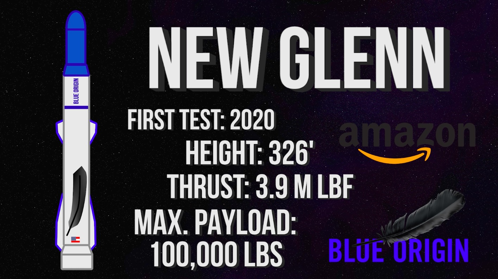

Glenn Rocket
Blue Origin is the space startup created by Amazon founder Jeff Bezos. They currently have a small reusable rocket in operation to send humans on sub-orbital tourist trips, but they plan on building a new bigger rocket capable of sending cargo to LEO.

The scheduled test flight for the New Glenn Rocket is set for no earlier than 2020. It comes in at a height of 326 feet with a liftoff thrust of 3.9 million pounds. With an estimated cargo capacity of 100,000 pounds, this rocket won’t set any records, but it will offer up even greater competition in getting cargo and humans to space.
These 4 rockets are the past and soon to be future leaders in heavy lift technology for space flight, but there are a few other notable rockets that should be mentioned.